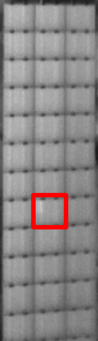
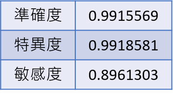

資料探勘技術
用於太陽光電模組的熱影像缺陷辨識
太陽能光電模組專題報告
隨著現代社會「能源」需求的增加，特別是台灣太陽光發電在再生能源中最具代表。從2017年到2022年，台灣的太陽光發電量增長了15倍以上，凸顯了其在能源市場的重要性。在這樣的背景下，太陽光電模組的維護成為關鍵，尤其是解決「熱斑效應」的問題。熱斑是指太陽光照射之下，發電異常而產生高溫，因此在紅外線熱影像之下，其亮度會變高，常由外部因素，如：灰塵、雨水遮擋，或是內部因素，如：焊接不良。此問題不止影響發電效率也可能造成安全隱患。過去，使用直升機或人工檢查是常見的維護方法，但這些方法既耗時又危險。因此，開發一種有效且安全的「監測方法」用以進行維護，成為太陽光電發展的重要技術挑戰，在此專題中主要研究的是預測由內部因素所造成的熱班問題。[
20~21]
圖一
1. 影像灰階化
因為原影像為紅外線圖，此圖內的像素分別是由RGB三原色的數值矩陣(1×3的矩陣)組成，這樣在做後續的迴歸模型無法簡單建立，會需要考慮的資訊過於複雜，所以使用OpenCV將影像轉為灰階後，每塊圖片內的像素分別代表為「1」數值，其數值會在0~255之間，0代表黑色，255代表白色，這樣就會較好建立模型。[
19]
圖二
2. 切割圖片
找到一條由多個太陽能光電板的邊框所連接成的直線，用Python透過將影像旋轉拉正後再以太陽能光電模組邊框的座標分割圖片，並找到每塊太陽能光電板內部的邊線的座標，再做切割並將切割後的相對座標位置進行標註。
圖三
3. 計算每塊小影像的像素平均亮度
因為切割後的影像是由好幾個像素點組合而成，所以我們以所有像素點的平均來表示每一塊影像所代表的平均亮度。
圖四
1. 變數介紹
同時記錄每塊影像切割前編號與切割後的相對位置，利用相對位置計算出絕對位置，並將各項數據合併成一個DataFrame。
local：大圖片編號(共1~1009，已刪除184:原圖過暗、956:資料太少，不足分析)
bigx：整張圖片有擷取的大片太陽能板x軸排序編號
bigx：整張圖片有擷取的大片太陽能板x軸排序編號
bigy：整張圖片有擷取的大片太陽能板y軸排序編號
x：每片太陽能板擷取的小格太陽能板以x軸排序編號
y：每片太陽能板擷取的小格太陽能板以y軸排序編號
fx：由bigx、x所組成的變數
fy：由bigy、y所組成的變數
------上述以(圖五)為例------
light：每一小格的平均亮度
new_light：每一小格對比度調整後的平均亮度
label：是否壞掉(0：正常，1：異常)
fxx：fx的平方項
fyy：fy的平方項
fxy：fx*fy項
bigx : 1 bigy : 1 x : 2 y : 1 fx : 2 fy : 1
圖五
2. 影像異常問題的種類
類型一是整片太陽能板中一小片整特別亮的異常，類型二是整排(或連續三小片)過亮的異常，類型三是整片太陽能板中一小片只有某個小點過亮。

類型一(圖八)
類型二(圖九)類型三(圖十)
將亮度較高的點與其餘點的差異放大，使其更加明，我們依照每張local去做亮度的調整，將所有亮度取平方然後再除上其local中Q3的數值，也就是我們將75%light的資料變小，25%light的資料變大。
I. 迴歸分析(Regression analysis)
使用迴歸分析建立模型是最常見的統計分析方法。本專題預期使用3個解釋變數建立具有區集(照片編號)的多元迴歸模型。若線性迴歸模型解釋能力不佳，將進行變數轉換，以增進模型的解釋能力。
II. XGBoost(Extreme Gradient Boosting)
是以 Gradient Boosting 為基礎再加上特徵隨機採樣等技巧，其主要思路是將多個決策樹組合而成的模型，屬於一種高度複雜演算法且準確率高的模型。[
13~14]
III. 移動平均(Moving Average)
透過整個數據集裡不同樣本的平均數來分析數據點的計算方法，可看趨勢或者是差異性。[
1~4]
我們使用了兩種計算方法:
方法一↑是依周圍的亮度取平均/中位數。(圖十三)
方法二↑是依上下至多三格的亮度取平均。(圖十四)
IV. 移動中位數(Moving Movmedian)
透過整個數據集裡不同樣本的中位數來分析數據點的計算方法，可看趨勢或者是差異性，計算方法跟移動平均的方法一(圖十三)一樣，只是將取平均數改為取中位數。
I. LOF局部離群因子(Local Outlier Factor)
LOF評估每個數據點相對於其周圍鄰近數據點的密度。一個正常的數據點應該被其鄰近的點包圍，而異常值則可能位於密度較低的區域。LOF通過比較每個數據點的局部密度與其鄰近點的局部密度，來識別潛在的異常值。
圖十五
k是用於計算局部異常因子的所取的最靠近其計算點數量
lrd_k(p):p點的局部可達密度
LOF_k(p) < 1 : p點的局部密度高於周遭其他區域的密度
LOF_k(p) = 1 : p點的局部密度接近周遭其他區域的密度(也就他們可能屬於同一群)
LOF_k(p) > 1 : p點的局部密度低於周遭其他區域的密度(也就是他可能就是異常值)
II. k-平均演算法(K-means)
非監督式學習的分群演算法，通常在資料分佈常態時效果較好。隨機取k個點作為起始點，計算每個資料與起始點距離的平方最小的做為分組，然後以每個分組的中心（平均）為新的起始點後不斷的重複計算，直到收斂後得到最後的分組。[
6~9]
III. ROC+統計離群值(Outlier)
統計離群：Q3+1.5*IQR，在我們研究中因1.5倍算出的界線太高，所以利用ROC界線推導得出最終倍率。[
10]
IV. 孤立森林(Isolation Forest)
原理類似於一片森林中找一顆與其他樹不同的樹。通過建立多棵決策樹，將數據進行分割，標示出相對於其他樹較為孤立的樣本來判斷離群值。[
16]
圖十六
其中：
h(x)：為樣本在iTree上的PathLength
E(h(x))：為樣本在t棵iTree的PathLength的平均數
c(n) : 為n個樣本建立平均路徑長度
基本條件:
s(x,n)= 接近1 : 路徑長度短，數據點容易被孤立
s(x,n)= 小於0.5 : 路徑長度長，得到一個正常點
Python:
負的為容易被孤立，正的為正常點
將以上模型殘差跟異常值檢測一對一，共會有40個結果(對比度調整與未調整的資料各20個結果)。

孤立森林 Isolation Forest(圖二十)

圖二十二
Step1.計算太陽光電板每排的平均亮度
同片同排取平均。
Step2.計算同片太陽光電板中與其他排平均亮度的差
同片中不同排的差(當前-其他)，將計算出來的差取平均來判斷是否超出界線。
Step3.判斷是否超出界線
界線:0.185*(當前圖片的最大亮度-最小亮度)，0.185為從10張的圖，以異常點的亮度正規化後所決定出的倍率，從下圖中可以得知倍率通常都會大於0.17，但是發現0.17的界線太低導致特異度太低，經過調整後我們認為0.185效果最佳。
圖二十三
方案一結果
圖二十四
(方案二) : 利用ROC計算各圖的最佳界線去獲取統計離群的最佳倍率用以預測各殘差的結果，再以所有結果的總和計算各指標。
Step1.獲取離群值「最終倍率」
各圖片倍率由獲取ROC最佳界線、Q3以及IQR推導出，將所有倍率大於1.5改為1.5，然後取平均後得出最終倍率。(圖二十六)
界線:Q3+最終倍率*IQR
圖二十六
Step2.ROC+統計離群預測結果
6個殘差分別與ROC+統計離群異常值檢測方法的結果
圖二十七
將上面六個預測結果加總，計算加總結果「大於等於 i」的各項指標。預測結果總和大於等於3的敏感度與特異度較為平衡。
圖二十八
由上圖結果可得知平衡點不一定為最佳結果，所以優化敏感度與特異度綜合指標，將敏感度與特異度分開觀察找到較佳的兩個閥值，抓取兩個閥值之間的資料放入新的模型，去比較結果。
圖二十九
圖三十
接續(方案二)
Step3.篩選資料，觀察敏感度與特異度
從圖二十九中我們先看敏感度可發現i等於1、2敏感度差不多，但從1到2特異度並未提升很多，所以我們以敏感度較高的i等於1當作其中一個閥值，接著觀察特異度能發現i從3以上特異度的值皆為0.99以上，但從敏感度可發現4與5之間有明顯落差，所以取i等於4當作另一個閥值。ROC+統計離群異常值檢測的預測結果總和，小於等於1預測為0，大於等於4預測為1，2~3改用其他模型預測。
圖三十一
方案二整合結果
選用孤立森林預測結果加總大於等於1，且與ROC保留的結果彙整，作為調整後case2的最終結果。
圖三十二
調整前case2的結果

圖三十三
I.單一模型結果(使用調整亮度後的移動中位數殘差+統計離群的異常值檢測)
II.複合模型結果(將方案一和調整後方案二結果整合，計算最終結果)
結論:
從前面的結果可得知，我們採用先做整排太陽光電板壞掉的預測再使用ROC配合統計離群的檢測與孤立森林的模型去預測單個壞掉的的效果是目前最佳的預測方式，其準確率約為99.1%，敏感度約為91.3%，特異度約為99.1%。資料在分析完後是可以回推初始位置利於太陽光電板維修。影像中有因其他因素導致損壞，而導致熱班效應不明顯，所以無法準確預測。
討論:
我們使用平均亮度與異常值檢測的方式來解決熱斑效應的問題，觀察到此方法抓到的點有不少亮度的確明顯過高的，但卻還沒被標記成異常的點，我們懷疑這些點可能是即將損毀，只是還沒到達臨界值。
圖三十六
研究限制:
無法解決前面中所介紹的影像異常問題的種類中類型三的問題如下圖影像問題。
圖三十七